Robotics
I have some experience in designing and implementing robotic systems. Here are some of the robotic systems I have helped develop:
- Real robotic arm operation: Use a 3D mouse to collect real robot data and deploy my own program.
-
ROS-based Intelligent autonomous car with SLAM mapping function:
I designed and implemented an intelligent autonomous vehicle system based on ROS that can map specific areas and perform data collection.
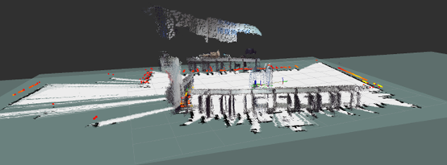 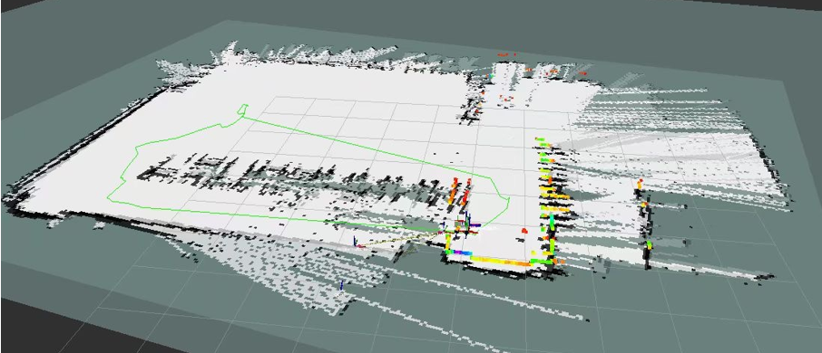 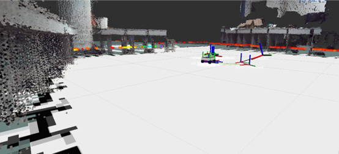 - Multi-sensor fusion vehicle system: Using qml，implemented the dashboard interface for the in-vehicle system, with relevant data intelligently collected through various sensors and displayed in real-time.
-
Composite unmanned vehicle control board (vehicle) and voice control relay control board (voice):
Developed and designed PCB control boards using LCEDA , the former for driving our unmanned vehicle system, and the latter for controlling some functions of the intelligent vehicle system.
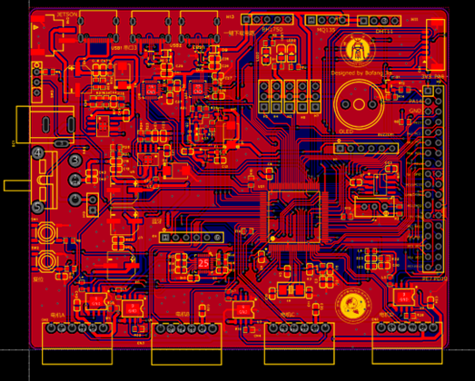 Top floor (vehicle)
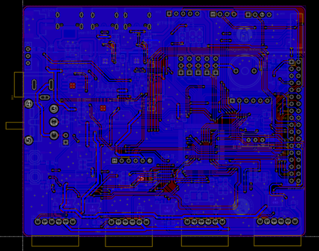 Substratum (vehicle)
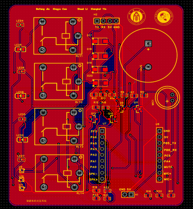 Top floor (voice)
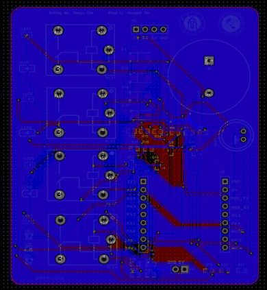 Substratum (voice)
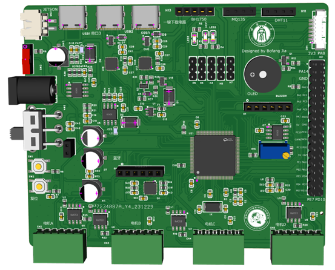 Sensing and control (vehicle)
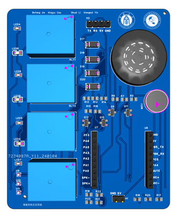 Voice interaction (voice)
- Robot verification: Ensuring the accuracy of movements under the digital twin environment, debugging planar motions such as straight-line and rotational movements, and performing maintenance and upgrades on the robot.

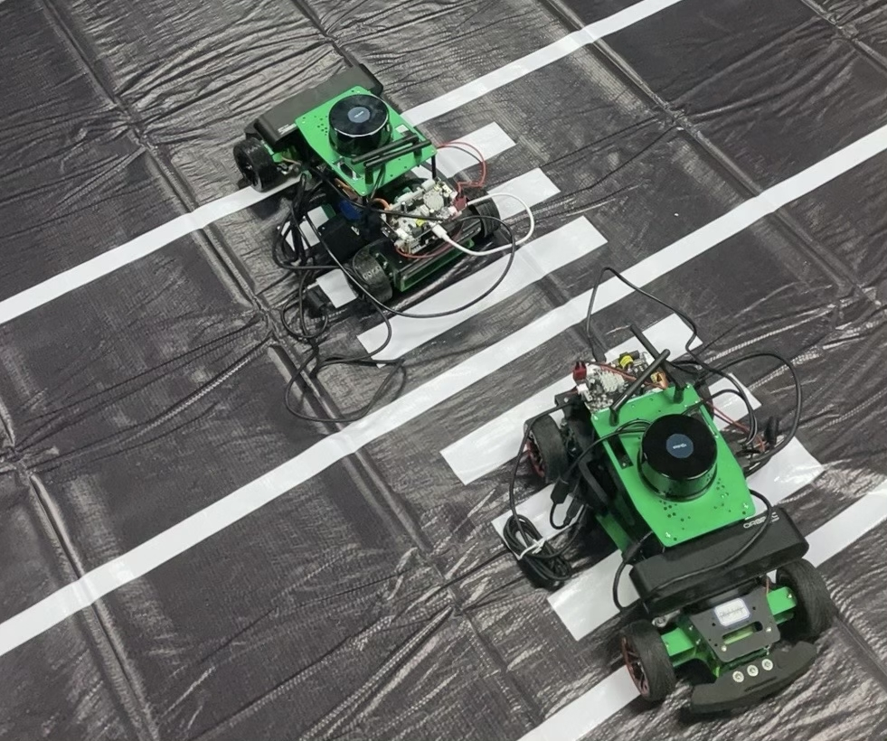 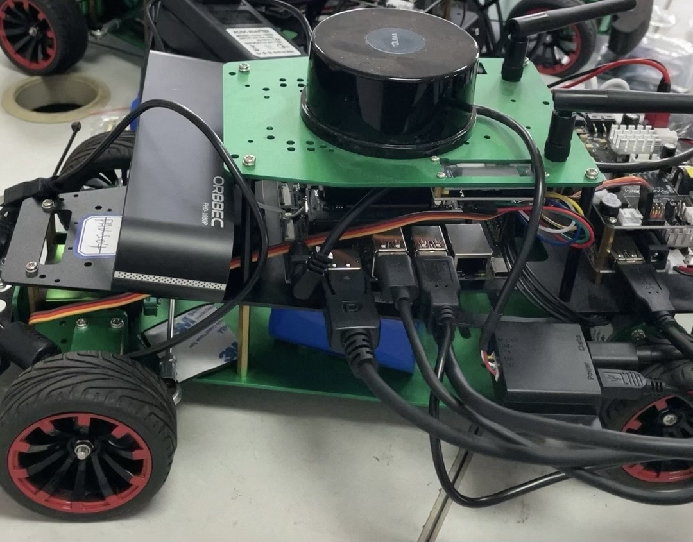 - Manufacture and repair robots: I have extensive practical experience in manufacturing and repairing various robots. In the process, we have assembled different types of robots, controllers, and sensors based on actual needs. We have also addressed some dangerous situations encountered, including robots losing control, battery fires, and motor burnouts.
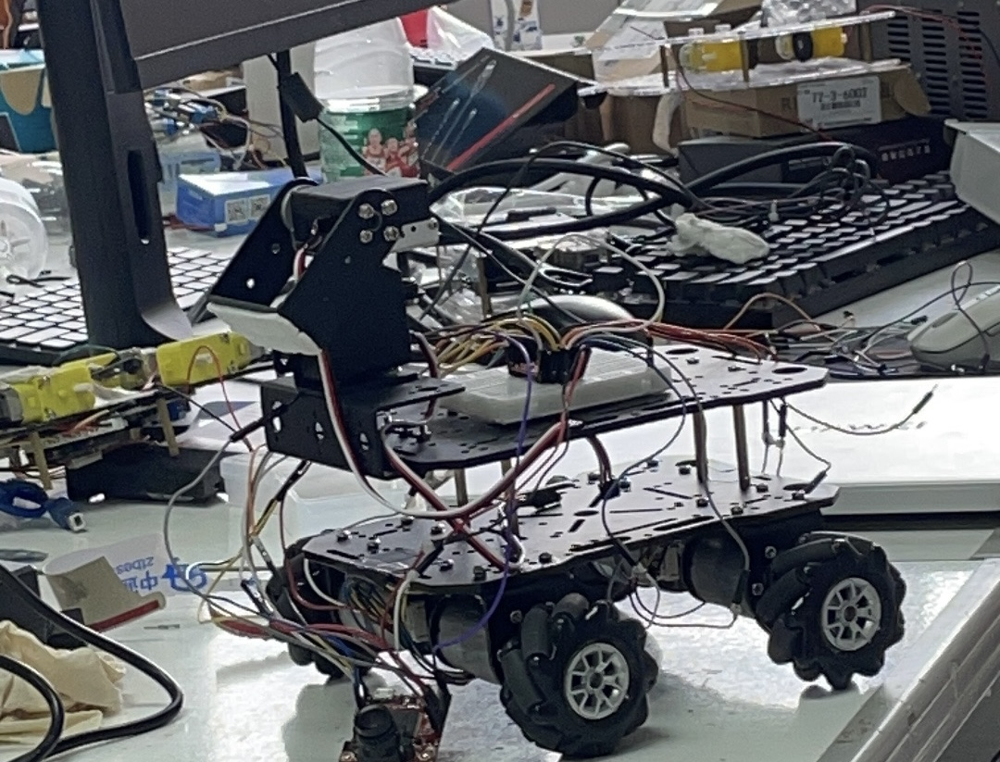 Motor maintenance
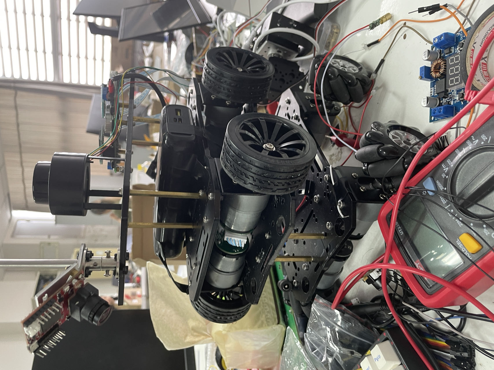 Radar and sensor testing
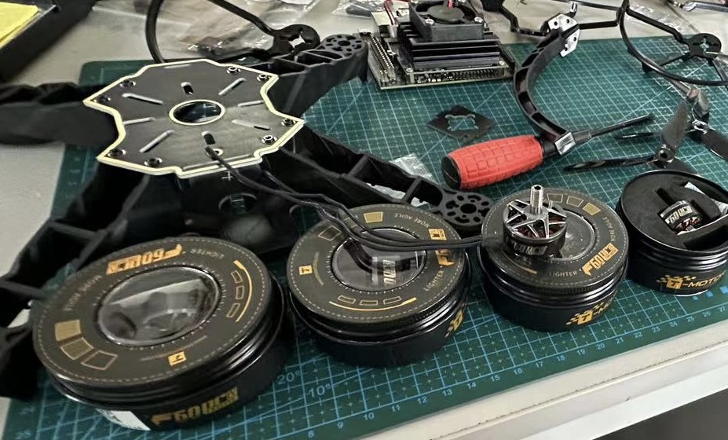 Drone assembly

ROS and SLAM autonomous cars
Contribution
- Semi-automatic data annotation and processing: Utilized a semi-automatic data annotation tool developed in the laboratory to annotate judicial documents, constructing a Chinese legal judgment document dataset of approximately ten thousand entries, providing data support for subsequent extraction of document-level judgment documents.

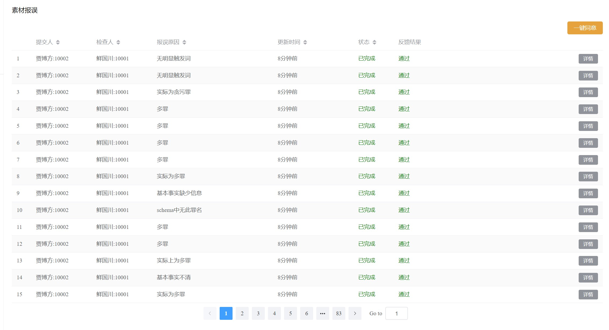 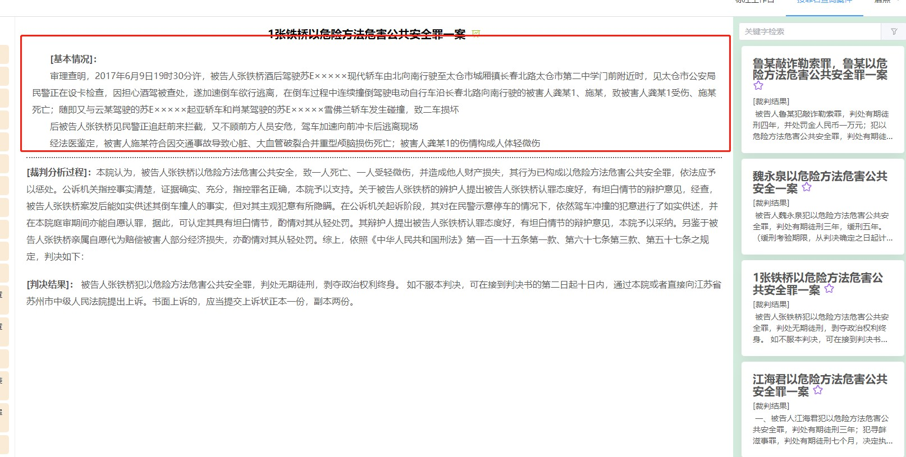 - Committed to equality, openness, and sharing of knowledge, we will soon be sharing review materials for some courses.
Due to time and limitations in expertise, these study materials may contain errors. If you discover any related errors, please promptly send an email to the following address. Thank you for your support and cooperation.
- jiabofang@email.swu.edu.cn
- bofangjia1227@gmail.com
We sincerely hope that more friends who share our vision will join us in promoting the openness, equality, and sharing of knowledge. If you share the same ideals, you are welcome to send an email to any of the above addresses.
Interests
Besides my daily coursework and research, I also have some other interests and hobbies:
- Debating: Enjoy participating in and appreciating Chinese debates, and have achieved some success.
- Traveling: Enjoy exploring customs, cultures, and landscapes of various places.
- Music: One of the best ways to relax.
Champion of the Southwest University debate contest
Yuzhong, Chongqing
- Robot verification: Ensuring the accuracy of movements under the digital twin environment, debugging planar motions such as straight-line and rotational movements, and performing maintenance and upgrades on the robot.